Sys.setenv(RETICULATE_PYTHON="/cloud/project/miniconda/envs/r-reticulate/bin/python")
reticulate::use_condaenv("r-reticulate")Urban indicators with open data
Session overview
This session will outline an open science analysis workflow using integrated project planning to generate documented data and a report on walkability for a single address point (our hotel), and then for a city (Bury, Manchester), while critically engaging with the strengths and limitations of the approach.
An overview will be given of core concepts. It is understood that given the diversity of backgrounds, attendees will have varying levels of familiarity or interest in these. Detailed notes have been provided, which allow people to follow along at their own pace. Please focus on what is of interest, modify the code if you like, explore tangents and hyperlinks if you wish.
This session provides an opportunity to question our methods. What do these mean when applied in difference places? Or using different parameters? What are the strengths, limitations, and possibilities? Let’s question these things to get the most from the session, and time will fly!
Contents
Motivation — why look at this?
Reproducible science — we’re aiming to do it, so we’ll cover some core concepts and terms so we’re all on the same page
OpenStreetMap and Volunteered Geographic Information — the challenges and opportunities of open data
Measuring walkability for a single point (our hotel)
Measuring walkability for a city (Bury in Greater Manchester, UK)
That’s ambitious for 1.5 hours, so we may not cover everything, but those interested can return to the material or linked resources at a later point.
Motivation
Spatial indicators of urban design and transport features, calculated at a range of scales from address points, to high resolution grids of the spatial distribution, to overall city summaries are valued by a range of stakeholders who seek to create healthy and sustainable cities: mapped, they can support policy makers and planners to target interventions within cities, and as high level statistics they can be used to compare performance across cities, and when measured across time can be used to monitor progress for achieving urban design goals for reducing inequities. They also provide a rich source of data for those advocating for disadvantaged and vulnerable community populations, to provide evidence for whether urban policies for where they live are serving their needs. Through data linkage, they can be used as environmental covariates in epidemiological analyses concerned with health, wellbeing or other outcomes.
Measurement of spatial urban indicators involves overcoming multiple challenges, particularly with regard to data availability, comparability, and quality. For the locations where data is available, the underlying definitions and assumptions may mean it may not always be suitable for making fair comparisons with other locations, be that within a city, or across multiple cities. Using appropriate definitions and justifying assumptions taken in a transparent way is crucial if one seeks measure urban phenomena within and across a series of cities in a fair and comparable way, that respects local contexts.
The Global Healthy and Sustainable City Indicators Collaboration study aims to build a network for benchmarking and monitoring policy and spatial indicators of urban design and transport features for cities in diverse contexts internationally. Open source software was developed to support this effort, providing a framework for analysis using open and/or custom data (where necessary) to measure a core set of spatial urban indicators, including a ‘walkability index’. This is a composite measure supported by a body of evidence [e.g. Grasser et al. 2012, Villanueva et al. 2013, Akinci et al. 2022 …] detailing how these aspects support living healthier, more active lifestyles, and is calculated as a function of
population density (for service demand and social connection opportunities)
street connectivity (indicative of ease of getting around)
neighbourhood access to a mixed range of services and amenities used in daily life (a supermarket, a convenience store, a public transport stop: ie. a minimal set of services typically available in a place where ‘living locally’ is more feasible)
We calculated this measure using open data for 25 cities (mostly; where found necessary we used other local data) (Boeing et al., 2022) and used the resulting dataset for within- and between-city comparisons which we disseminated in a series of reports and infographic scorecards. The study provided a proof-of-concept that we now aim to build upon with a 1000-city challenge.

This walkability measure is not perfect nor the full story; its a model, not reality itself. For example, it doesn’t capture details on sidewalk presence (which is assumed, but we know this is not always the case), quality or width, nor slope or perceived safety from crime. But it provides a parsimonious model of core aspects that we know can shape how urban populations interact and utilise their neighbourhoods, the design of which can have important downstream health and wellbeing impacts.
Reproducible science
The motivation to use a scripted programming language for scientific analyses is for reproducibility and transparency, important aspects of open science, both of which support the credibility of research. Code, the written instructions to run a software program, can be used as a recipe to recreate your or someone else’s analysis at a later date, and so inspires confidence in the rigour of the practitioners. The additional benefit is that analyses written as code in plain text files are a natural fit for version control, with changes able to be tracked across time using version control software like Git and a project management system like GitHub.
This helps with sharing workflows for calculating spatial urban indicators like the one below with others so that they can apply them across diverse settings.

In practice, much care needs to be taken to document the computational environment the code runs in and the software packages used, as these can be complex and therefore challenging to reproduce. There are various solutions to this challenge to reproducibility: in our ‘global indicators’ project we use Docker to define ‘images’ of software environments that can be launched in ‘containers’; alternatively, platforms like RStudio Cloud allow for curated computational environments to be accessed via the internet, which is particularly valuable in a training session such as this. It means workshop participants don’t have to install software they might not be familiar with, and can jump in to use it for applied problem solving.
R and Python may be the two most popular languages for performing computational scientific analyses. The R language was developed with a particular emphasis on statistics, but both R and Python are open source and broadly used. Python code can even be launched within R using the reticulate package.

Either language can be used for spatial and network analyses of urban environments, however I will feature some particular software packages authored for Python.
The following code block is used to set up a computational environment to support reproducible science use Python within R:
(if interested, for full details see the Rstudio Cloud base project file setup.R and the further file for setting up Python packages using the conda package manager, conda_setup.R)
A caveat: for spatial analysis, I usually I use PostGIS (a spatial database extension for PostgreSQL), and increasingly use Docker to set up my computational environments. For this session I attempted to make things simple/consistent for everyone by using RStudio Cloud, but I had some complications, which we can discuss – perhaps this will be instructional for the complexity of setting up and sharing computational environments!
OpenStreetMap and Volunteered Geographic Information
OpenStreetMap is a community mapping platform, developed by a UK software developer called Steve Coast in 2004 with an aim of facilitating the collaborative cataloguing and distribution of open geographical data; its usage globally particularly took off from 2007. Historical archives for the ‘planet’ can be retrieved back to that time; however, often geographic excerpts for particular regions of interest are more convenient. No data is perfect, and in addition to providing opportunities community contributed data has its own limitations to be aware of. These include potential bias in coverage (people are more likely to map where they live, so expect denser urban areas to have more timely and comprehensive representative) - both within cities, and between cities. For example, OpenStreetMap is used for humanitarian purposes in many locations, and while hard infrastructure (e.g. roads) may be more likely to be well represented, it cannot be assumed that this is the case for all amenities in all locations. For example, through iterative validation with local partners in Maiduguri, Nigeria, we found that food and convenience locations were not well represented in OpenStreetMap for that city and instead ensured that we could use an alternative data source to represent these locations. This is why official, government run open data portals are also incredibly important — they may be updated in a less timely manner, but ideally they would also feed into OpenStreetMap (ie. its not just people in the community tagging a place they know; people also make larger scale contributions to OpenStreetMap from broader datasets, and government data is incredibly important to support this).
To understand how features are represented in OpenStreetMap using key:value pairs known as ‘tags’, it is recommended to consult community tagging guidelines. For example, one way of representing a supermarket is to tag a point location with the key:value pair attribute “shop=supermarket” (the most common way; 426,402 tags globally at the time of writing), but on 8 occasions people have coded this as “amenity=supermarket”; its not common, and it might not be right, but people have done it, and we know what they mean. So when seeking to capture how people represent the world in data, its important to consider equivalences or synonyms; both what they ‘should’ do, and what they ‘might’ do, and how both of these may vary geographically (eg. use of different languages, or concepts for ‘fresh food vendors’ in different locations, which might be what you’re actually interested in). One option to review both ‘how’ and ‘where’ features are tagged is to use OpenStreetMap TagInfo, which allows exploration of the frequency of key-value pair tag combinations, as well as generate a link to find these in the current version of OpenStreetmap using Overpass Turbo (Clicking on the link will take you to a map displaying the 8 locations where supermarkets were tagged idiosyncratically as “amenity=supermarket”).
Measuring walkability for a single point
The purpose of this section is to introduce the core methods in the process of calculating a walkability index. Its intended that we’ll do this for a single address (e.g. Carrer de Ricardo Micó, 1, 46009 València, Valencia), but with a view to later performing this analysis to get the spatial distribution of ‘walkability’ for a city (Bury in the UK).
Constructing a routable network
There are multiple ways one can retrieve data from OpenStreetMap in order to construct a routable network. One commonly used software package that supports this is OSMnx, a library authored by Geoff Boeing for modelling connectivity and other urban metrics using OpenStreetMap with the network analysis library NetworkX (hence the name, OSMnx). Here we’ll work through how this is done.
First, we import the libraries we will be using for this analysis. For OSMnx, we print out the version, so if we return to this code later we better understand the underlying software context at the time when we ran it. This is important for reproducibility, since features and implementation can change over time (e.g. the functions in version 0.14 were different from the ones in 1.2.2, and require different code). This is part of the metadata we can record for our project.
import osmnx as ox # to derive network from OpenStreetMap data
import networkx as nx # for network analysis
import matplotlib.pyplot as plt # for creating plots
import numpy as np # for numerical evaluation
import pandas as pd # for tabular data representation
import geopandas as gpd # for geographical data representation
ox.settings.log_console=True # print what's happening in the console
ox.settings.use_cache=True # if something has been downloaded, retain it
print(f"OSMnx Version: {ox.__version__}") # display the version being usedOSMnx Version: 1.2.2OSMnx has default route types, however these can be customised; this one allows both walking and cycling networks, but excludes features tagged as ‘areas’ (FYI, its an open question how to most appropriate represent these, as discussed here).
pedestrian = (
'["highway"]'
'["area"!~"yes"]'
'["highway"!~"motor|proposed|construction|abandoned|platform|raceway"]'
'["foot"!~"no"]'
'["service"!~"private"]'
'["access"!~"private"]'
)Here is a basic example of retrieving the 400m network graph using this pedestrian network filter around our hotel, or other address (you can change this variable if you like!). Running the code block below will display a log of messages displaying what is being done (I set the option to display logging on for this exercise, then turn it off), and afterwards we’ll have a look at what we can do with the results:
address = "Carrer de Ricardo Micó, 1, 46009 València, Valencia"
analysis_distance = 500
G = ox.graph_from_address(address, custom_filter= pedestrian, dist=analysis_distance)
ox.settings.log_console=FalseSo, in the output from running the above (which you can see in RStudio after running the code, but not the rendered outputs, sorry) we see the gist of the process that the OSMnx software takes to locate coordinates for the given address, and retrieve an excerpt of features corresponding to the criteria in our filter for a bounding box corresponding to the supplied distance that is centred upon the specified origin point (ie. our hotel). It then uses an algorithm to simplify the cartographic representation so that it can function as a routable network, restricted to paths reachable within 500m of the origin location. I chose 500m as this is a relatively constrained scale that allows us to see some detail, and doesn’t take too long/too much bandwidth to download in a workshop!
We can plot this to see what it looks like, and hopefully we’ll recognise the layout (if we don’t, perhaps the geocoding of the origin text address has failed due to an ambiguous location):
fig,ax = ox.plot_graph(
G=G,
node_size=3,
bgcolor='white',
edge_color='gray',
node_color='black'
)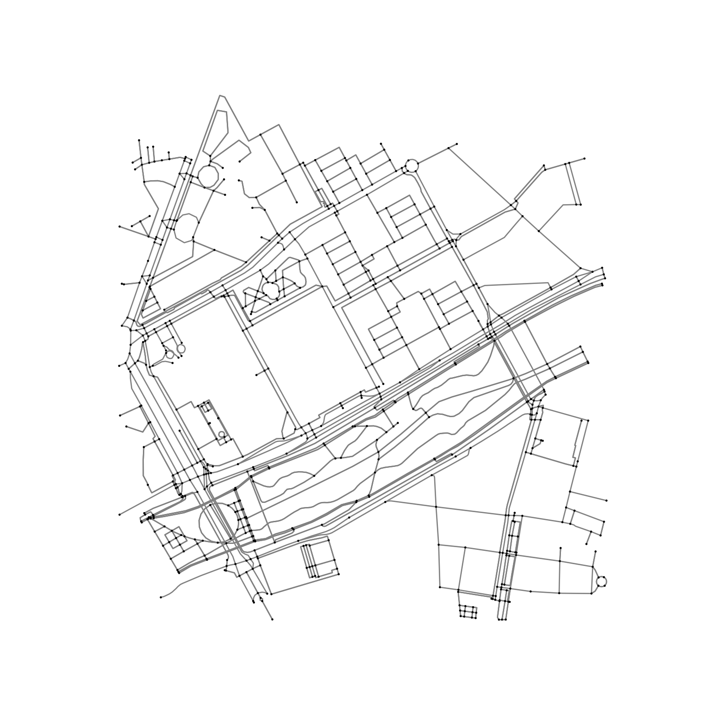
The above map looks pretty recognisable to me — we can see the street outside our hotel in the middle, and various paths radiating out from this, including along and across the Jardi del Turia, up to 500 metres away. For our workshop, let’s proceed assuming this is more or less accurate.
Representing street intersections
In the above figure, we also notice how a network graph like this that can support routing analyses may not necessarily be appropriate for evaluating the ‘true’ locations of intersections. Its still quite a bit over complex, and usually one would clean a dataset of intersection ‘nodes’ (the clusters of dots in the above plot) before evaluating street connectivity in terms of the number of intersections within a particular area. The reason why is, for example a roundabout could be represented as perhaps 4, 12, or even more nodes depending how detailed it has been represented cartographically (eg intersections of multiple lanes of traffic, footpaths, cycleways); for pedestrian purposes though, it perhaps should be counted just as a single intersection.
The problem is, on the one hand manual data cleaning is rarely feasible; on the other, its tricky to get a ‘once size fits all’ algorithm for cleaning networks. OSMnx has a ‘consolidate intersections’ function, but it only offers a single parameter to tune this; being, a distance radius within which nodes should theoretically be simplified. It makes things simple, which might be nice, but can you rely on it? At the very least, you should evaluate the assumption that you can. One way of doing this is to identify a range of different network topologies in your study region(s) of interest, and visually examine the implications of cleaning using a series of distances (eg 5, 8, 10, 12, and 15 metres).
This is a somewhat complicated procedure, so rather than write it out multiple times, we’ll define a function to do perform this sensitivity analysis of the tolerance parameter for consolidating intersections given a particular address, for a series of parameter options across a given distance:
Now we have this function, we can run it quite simply for a default network analysis distance of 250 metres by supplying an address and our network definition. Below, we iterate over a series of three addresses in different contexts to get a sense of how this intersection cleaning operates in the address we defined above, as well as different suburbs of Bury, in Greater Manchester, UK.
places = [
address,
"Bury, Greater Manchester, United Kingdom",
"Ramsbottom, Greater Manchester, United Kingdom",
"Tottington, Greater Manchester, United Kingdom",
"Radcliffe, Greater Manchester, United Kingdom",
"Whitefield, Greater Manchester, United Kingdom",
"Prestwich, Heaton Park, Greater Manchester, United Kingdom"
]
for place in places:
intersection_tuning(place, custom_filter=pedestrian)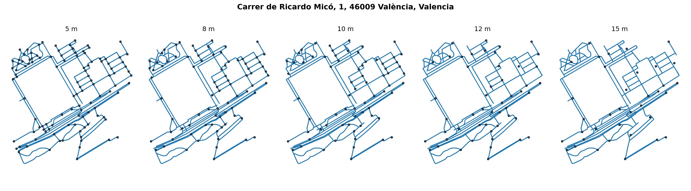
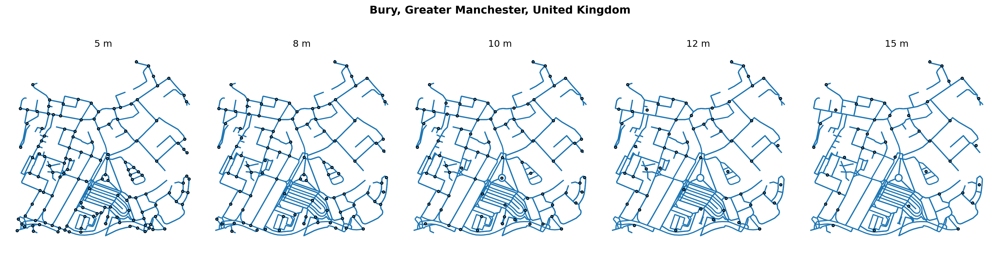
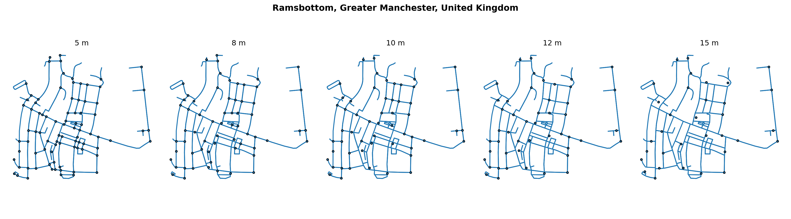
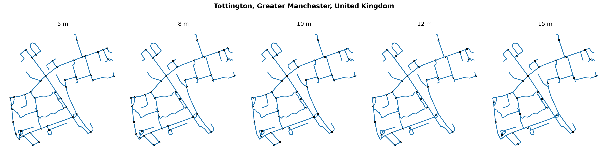
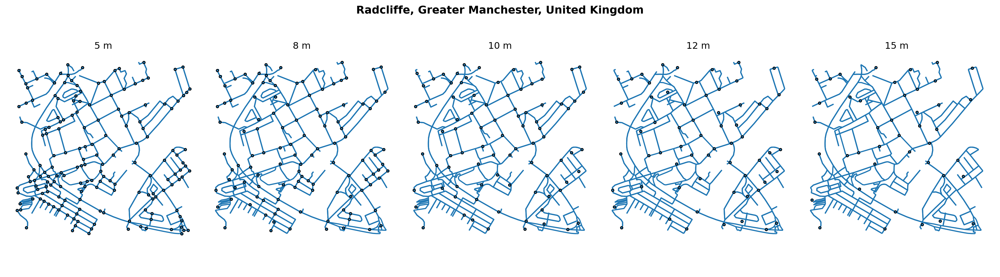
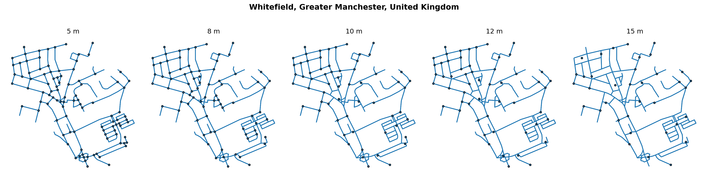
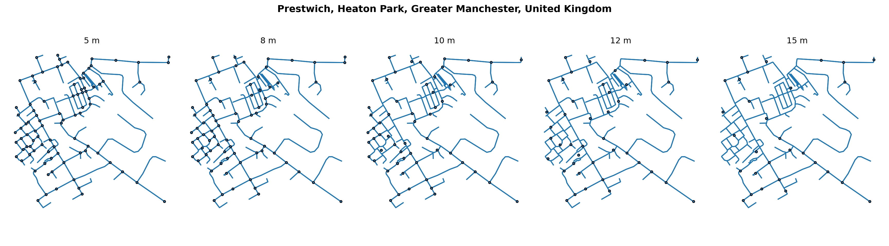
(Please excuse the look of these plots -- I wrote this code to be run in Python, and in RStudio it doesn’t display as neatly as I intended; it looks better when exported (see the rendered Quarto Markdown document), but the scale still isn’t right. Ideally also there might be a basemap to go with them, but again, its a bit more complicated for me doing this via R -- but its sufficient to get the idea, so let’s keep it simple and move on!)
You can consider these representations of the respective addresses and cross reference them by searching for these same addresses on Google (useful for its satellite base map) and OpenStreetMap (useful as the source of the data we are retrieving).
The important thing is what they show, which is that the choice of tuning parameter is a very important methodological decision, the choice of which should be justified. Below is a portion from OpenStreetMap roughly corresponding to the final set of plots for “Prestwich, Heaton Park, Greater Manchester, United Kingdom”, and comparing results of cleaning with a tolerance of 10 m (left) and 12 m (right). In both images, we see that the areas particularly impacted by cleaning are dense intersections on features such as car parks (eg the array of paths towards the upper left where intersections are broadly omitted or ‘cleaned’ in both images). These paths between cars aren’t really what we have in mind when we think of ‘intersections’, so the reduction in representation to far fewer points is arguably reasonable in these contexts. However, other paths which seem like more legitimate intersections have been cleaned away. The orange circles highlight provide ‘spot the difference’ examples where the increase in tolerance of 2m has meant the difference of including or excluding representation of a particular intersection.

Using this approach, an analyst must make some determination which value best can represent their overall region, or find a different method which could be robust for identifying true intersections across the different network topologies that may be present in an urban study region.
For this reason, its important to check how the parameterisation of analysis is performed to make sure reality is being adequately represented. Software tools are not static and can also change over time — the consolidate intersections function in OSMnx has been updated and performs differently to the previous clean intersections function it replaced from an earlier version of the package. I am aware that the behaviour of the function is problematic in some contexts (eg downtown Helsinki, which has extremely detailed OpenStreetMap data becomes dramatically overcleaned; our local collaborator suggested a parameter of 5m would be appropriate there, however it may over-inflate intersection count in other more sparse contexts). In the coming year I would like to review other options for performing this task that are more robust to variation in network topology, and if you have recommendations, please share!
Evaluating routing from an origin
There are many different algorithms and software implementations of algorithms for evaluating distance from a point to one or many others given a directed or undirected graph representation of a routable network, using distance as a cost function. A popular algorithm is Djikstra’s shortest path (original paper) and this can be calculated using the Python package networkx. It may not be the fastest or most performant way to do this (e.g. in our Global indicators study we use a mix of networkx and pandana, which are useful for different purposes). But for our example here its a good implementation that will work.
Because things start getting a bit complicated from here, now is also a good time to be a bit more systematic with how we are tracking our project configuration and analysis parameters. To help us keep track of everything more easily, we’ll abstract the parameter values to a YAML (.yml) text file. This is a simple way to record our analysis configuration, which can be read into code. This means the code can be re-used for new analyses more readily — you don’t need to change your methods (unless you want to), just the way you parameterise them! But we’ll see how we go.
For the origin point, we’ll record the address we’ll geocode, details about the coordinate reference system our preliminary ‘NH Valencia’ point analysis will use (EPSG 25830, also known as ETRS89 or UTM Zone 30N; this allows us to use metres instead of degrees for coordinates, with reasonable accuracy of about 1 metre in Europe)
We’ll also collate the parameters for our analysis, including a buffer distance to ensure we have sufficient information at the edge of the graph that relevant things aren’t chopped off (also known as ‘edge effects’)
Check out the file config.yml, which we’ll soon load up to get these parameters.
We’ll also define a couple of functions that we can later use, and we can also store these in an external file, say functions.py.
So the below code illustrates how you might start a scripted analysis, importing the modules needed, your parameters, some functions, and taking a record of some aspects of the computational environment as a record of what is being done that we can later save as metadata to accompany our outputs.
Code
import osmnx as ox # to derive network from OpenStreetMap data
import networkx as nx # for network analysis
import matplotlib.pyplot as plt # for creating plots
import numpy as np # for numerical evaluation
import pandas as pd # for tabular data representation
import geopandas as gpd # for geographical data representation
import yaml # to read YAML configuration files
from pprint import pprint # to print more readable text
# import the custom functions we defined
from functions import *
# Load project configuration
with open('config.yml') as f:
config = yaml.safe_load(f)
# import the variables defined in the configuration file
# this allows us to access them directly
for group in config.keys():
globals()[group]=config[group]
# remove the configuration file now we've got everything out
# not that we need to --
# but since this is a class, this is how you would!
del config
# an example of how we could record metadata on software versions
# that could be retained if we later save this to a file
analysis['packages'] = {}
analysis['packages']['osmnx'] = ox.__version__
analysis['packages']['networkx'] = nx.__version__Here is an example of how the configuration parameters we imported and exported on look parsed as dictionary data structures within python:
Origin parameters:{'address': 'Carrer de Ricardo Micó, 1, 46009 València, Valencia',
'crs': 'epsg:25830'}
Analysis parameters:{'access_distance': 500,
'analysis_buffer': 600,
'data': 'data/valencia_v2_es_2020_1600m_buffer.gpkg',
'intersection_tolerance': 10,
'packages': {'networkx': '2.8.7', 'osmnx': '1.2.2'},
'pedestrian_definition': '["highway"]\n'
'["area"!~"yes"] \n'
'["highway"!~"motor|proposed|construction|abandoned|platform|raceway"]\n'
'["foot"!~"no"] \n'
'["service"!~"private"] \n'
'["access"!~"private"]',
'population': 'valencia_v2_es_2020_grid_100mm_2022-11-02'}Now we will use our origin and analysis parameters to gather the information we need for routing analyses from our origin point:
Code
# Geocode the origin and flesh out details
origin['gdf'] = ox.geocoder.geocode_to_gdf(origin['address']).to_crs(origin['crs'])
origin['coordinates'] = {
'x':origin['gdf'].centroid.x[0],
'y':origin['gdf'].centroid.y[0]
}
# Retrieve the graph surrounding our origin
origin['G'] = ox.graph_from_address(
origin['address'],
custom_filter=analysis['pedestrian_definition'],
dist=analysis['analysis_buffer']
)
# Project the graph to support distance analyses
origin['G_proj'] = ox.project_graph(
origin['G'],
to_crs=origin['crs']
).to_undirected()
# Record the closest network node identifier,
# and its distance from our geocoded location
origin['node'],origin['node_distance'] = ox.nearest_nodes(
origin['G_proj'],
X=origin['coordinates']['x'],
Y=origin['coordinates']['y'],
return_dist=True)
## Record the route from the origin to each node
origin['node_distances'] = nx.single_source_dijkstra_path_length(
G = origin['G_proj'],
source = origin['node'],
cutoff = analysis['analysis_buffer'],
weight='length'
)
## Format the distance to nearest node as a dataframe
origin['node_distances'] = pd.DataFrame.from_dict(
origin['node_distances'],
orient='index',
columns=['distance']
)
# Initialise a dictionary to store results we'll populate later
origin['indicators'] = {}If you now double click on ‘origin’ in the RStudio Cloud Environment pane (to the upper right of the interface), you’ll see this object now contains our input parameters, as well as a lot of additional derived information about the origin that we’ll use through our analyses.
To model walking distance we will evaluate the distance from the nearest node to to other nodes across the undirected network graph. The reason we calculated the nearest node to our origin point is that it allows us to account for distance from this location to its nearest node between nodes on the graph. The nearest node may not be coincident with our starting point, so we record the distance and we can account for that in traversal estimates later. We then recorded the distance to all other nodes, which allows us to identify the network expanse reachable within some walkable distance and evaluate distances to destinations associated with these network nodes.
This is a type of ‘pre-computing’. In this case we’re not doing it in a particularly efficient way (and i glossed over some details you might want to consider; to calculate full distance I’d evaluate using the terminal nodes of nearest edge of origins and destinations, not just the nearest node; we do this in our global indicators tool), but the concept is powerful when you’re working with large datasets.
Identifying a local walkable neighbourhood
The impact of exposure to all the locations you could reach within comfortable walking distance of your home(s) across your life course is a powerful one in social epidemiology. There are different ways to model this, but a popular concept used to do this is a ‘sausage buffer’ (Forsyth et al, 2012) — that is where you take all the network edges reachable within some walkable distance and buffer the geometry by a reasonable amount (e.g. 50 m). The effect looks a bit like a pile of intestines, hence the gross name. I prefer to call it a ‘local walkable neighbourhood’, as its less visceral and more descriptive of what we’re trying to capture. A related concept is an isochrone. Once you have this geometric representation of a walkable neighbourhood, you can use the area to calculate built environment indicators such as the local neighbourhood population density, dwelling density or street connectivity per unit of area (e.g. km² or hectares).
Here’s one way that you can do this, for a 400m walkable neighbourhood:
# set a neighbourhood distance; we'll use 400 to keep things speedy
origin['nh_distance']=400
# list the nodes reachable within neighbourhood distance
nh_nodes = origin['node_distances']\
.query(f"distance < {origin['nh_distance']}")\
.index
# extract the nodes in a useful format for plotting
gdf_nodes, gdf_edges = ox.utils_graph.graph_to_gdfs(origin['G_proj'])
# identify the edges that start and end with nodes reachable within 400m
nh_edges = [(u,v,k) for (u,v,k) in gdf_edges\
.index if u in nh_nodes and v in nh_nodes]
# select and buffer edges within distance
origin['neighbourhood'] = gpd.GeoDataFrame(
geometry=gdf_edges.loc[nh_edges]\
.buffer(50)
).dissolve()
origin['neighbourhood_area'] = origin['neighbourhood'].area[0]/10**6
origin['pedshed'] = origin['neighbourhood_area']/\
(np.pi*origin['nh_distance']**2)/10**6
# plot walkable neighbourhood buffer
fig, ax = plt.subplots(figsize=(3, 3))
capture = ax.plot(
origin['coordinates']['x'],
origin['coordinates']['y'],
'o',
color='yellow'
)
capture = gdf_edges.plot(ax=ax,color='black', alpha=0.4)
capture = origin['neighbourhood'].plot(ax=ax, alpha=0.4)
ax.set_axis_off()
capture = plt.suptitle(
f"{origin['nh_distance']} m Local walkable neighbourhood area "
f"({origin['neighbourhood_area']:0.2} km²)"
)
plt.show()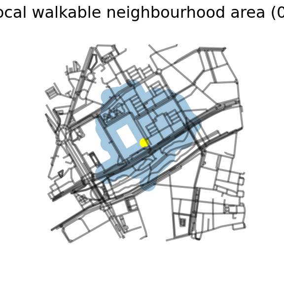
plt.close()The local walkable neighbourhood reachable within 400m of our hotel has an area of 0.28 km². If we think about the theoretical best scenario of being able to walk everywhere within 400m of the origin — that would be the circle with radius \(\pi r^2\), or \(\pi \times 0.4^2 = 0.50\) km². The ratio of the proportion of the theoretically potentially reachable area surrounding an origin point is known as a pedshed (pedestrian-shed) ratio; its calculated as the reachable area relative to the area of the circle with same radius as the parameterised walkable distance. So, \(0.282/0.583= 0.48\), or 48% of the area surrounding that point was estimated to be reachable.
We can now calculate density statistics for this area:
# Extract clean intersections using our configured value
# (determined following preliminary validation but also
# subject to review --- solicit review of your generated
# data by others in additon to yourlsef-- does it seem
# fit for purpose and adequate to represent what you are
# trying to represent for this city?)
origin['neighbourhood_intersections'] = ox.consolidate_intersections(
origin['G_proj'],
tolerance=analysis['intersection_tolerance'],
rebuild_graph=False,
dead_ends=False
)
# get point intersection count
# I don't necessarily think this is the most obious way to do this
# But it works. (usually I do this in PostGIS wrapped in Python)
# Also, I'm trying to do things in separate steps rather than the
# most efficient way, for demonstration purposes!
origin['neighbourhood_intersections'] = origin['neighbourhood_intersections'][
np.isin(
np.arange(0, len(origin['neighbourhood_intersections'])),
origin['neighbourhood'].sindex\
.query_bulk(
origin['neighbourhood_intersections'].geometry,
predicate='intersects')[0]
)
]
origin['neighbourhood_intersection_count'] = len(
origin['neighbourhood_intersections']
)
origin['indicators']['intersections_per_sqkm'] = (
origin['neighbourhood_intersection_count']/origin['neighbourhood_area']
)
# plot walkable neighbourhood buffer
fig, ax = plt.subplots(figsize=(3, 3))
capture = gdf_edges.plot(ax=ax,color='black', alpha=0.4)
capture = origin['neighbourhood'].plot(ax=ax, alpha=0.4)
capture = origin['neighbourhood_intersections'].plot(
ax=ax,
color='black',
marker = ".")
ax.set_axis_off()
capture = plt.suptitle(
f"{origin['nh_distance']} m Local walkable neighbourhood area\n"
"intersection density: "
f"({int(round(origin['indicators']['intersections_per_sqkm'],0))} per km²)"
)
plt.show()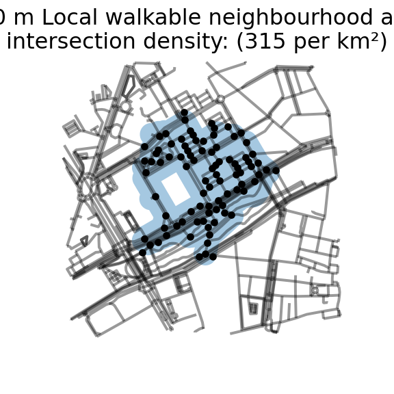
plt.close()For population, I pre-clipped the 2020 population estimates 100m grid from the European Commision Global Human Settlements Layer for the Valencia region, so to save downloading this data we’ll use that – but the principle would be the same if using the source directly.
# load population
# gdf = gpd.read_file(f'../{analysis["data"]}', layer=analysis['population'])
# I commented the above out because the RStudio python environment failed to successfully install required software to do this --- it causes a crash
# let's improvise for the sake of the exercise --- we'll guesstimate that population is 430 within 400m radius of our hotel. The actual values range from about 15 (overlapping a road) to 130 in our area --- noting it has attributed population to our hotel --- its a modelled population distribution
origin['population'] = 450
origin['indicators']['population_per_sqkm'] = (
origin['population']/origin['neighbourhood_area']
)…. Okay — i’ve had a struggle with RStudio cloud at this point — I couldn’t successfully install some of the required packages it seems … so what we’ll do is .. I ended up improvising in the above cell block, but here are other attempts retained fyi
#install.packages(c('sf','rgdal','tidyverse'))
#library(sf)
#library(rgdal)
#library(tidyverse)
#population <- st_read('data/valencia_v2_es_2020_1600m_buffer.gpkg', #
# layer='valencia_v2_es_2020_grid_100mm_2022-11-02')
#plot(population$)
# this loads, but I don't know/don't have time to get this into pythonokay this is a big problem — can’t figure out how to read a file with python right now with this set up in R; major computational environment fail! we’ll move on… and later improvise… (the below section was written earlier)
Identifying destinations
Neighbourhoods having services and amenities (destinations) available within walking distance can support incidental physical activity. If you don’t need to drive to get to them, you may be more likely to walk, get exercise, reduce petrol consumption and emissions, save money, and so forth.
We discussed above how amenities represented on OpenStreetMap in a particular place can be identified using a series of key-value pair synonyms. I have uploaded a dataset based on synonyms for three categories of destination type that we used in our 25-city study: ‘Fresh food / Market’; ‘Convenience’; and ‘Public transport (any)’. In the global indicators study, we also analysed public transport using GTFS data where available, but we won’t do this here.
The follow code snippet reads in the CSV file dataset, and displays the key-value pair terms corresponding to these categories.
tags = pd.read_csv('./data/osm_destination_definitions.csv', encoding="utf-8")
destinations = tags['Destination'].unique()
for d in destinations:
print(f"\n{d}\n")
print(tags.query(f"Destination=='{d}'")[['key','value']].fillna('').to_markdown(index=False))Fresh Food / Market
| key | value |
|---|---|
| shop | supermarket |
| supermarket | yes |
| amenity | supermarket |
| building | supermarket |
| shop | grocery |
| shop | bakery |
| shop | pastry |
| name | Tortillería |
| shop | butcher |
| shop | seafood |
| shop | fishmonger |
| shop | greengrocer |
| shop | fruit |
| shop | fruits |
| shop | vegetables |
| shop | deli |
| shop | cheese |
| amenity | marketplace |
| amenity | market |
| amenity | market_place |
| amenity | public_market |
| shop | marketplace |
| shop | market |
Convenience
| key | value |
|---|---|
| shop | convenience |
| amenity | fuel |
| shop | kiosk |
| shop | newsagent |
| shop | newsagency |
| amenity | newsagency |
Public transport stop (any)
| key | value |
|---|---|
| public_transport | platform |
| public_transport | stop_position |
| highway | bus_stop |
| highway | platform |
| railway | platform |
| public_transport | station |
| amenity | ferry_terminal |
| railway | tram_stop |
| railway | stop |
When applying these concepts in a new place, its worth considering if there are other relevant tags. You are welcome to modify these and evaluate the impact of that, but otherwise we’ll draw on these terms for this exercise.
We’ll use these tags now to retrieve geometries corresponding to each of these categories for a 500m radius of the address variable we defined earlier (ie. our hotel, or other address if you changed it).
destination_data = {}
for d in destinations:
tag_lookup = tags\
.query(f"Destination=='{d}'")[['key','value']]\
.groupby('key')['value']\
.apply(list)\
.to_dict()
destination_data[d] = ox.geometries.geometries_from_address(
origin['address'],
tag_lookup,
dist=500
)Now we can plot what these look like, overlaying a name if one was present in the data:
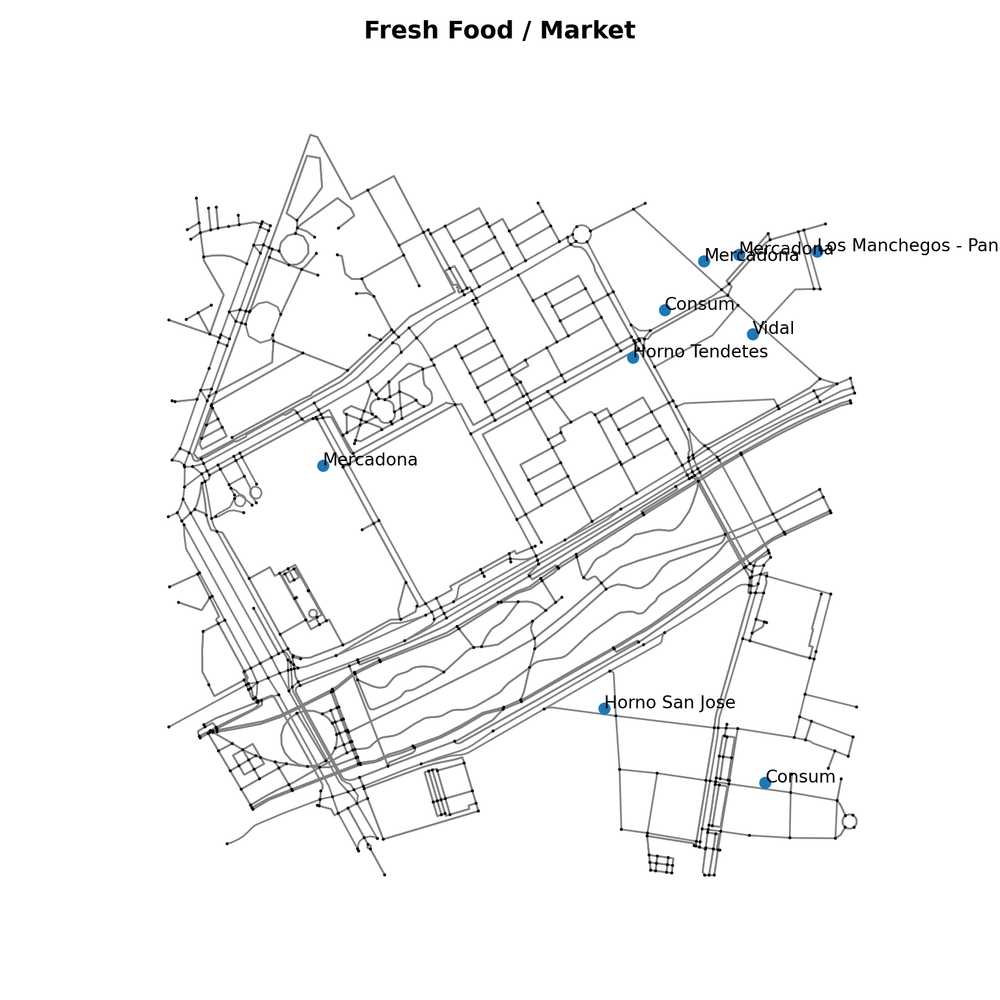
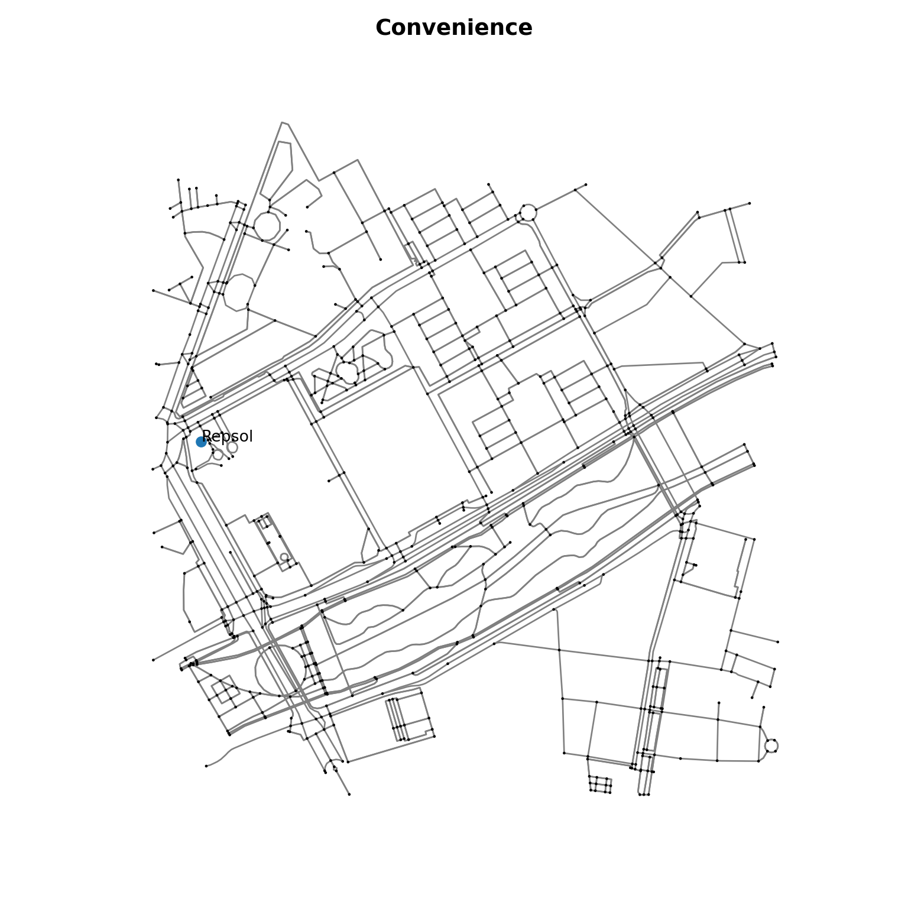
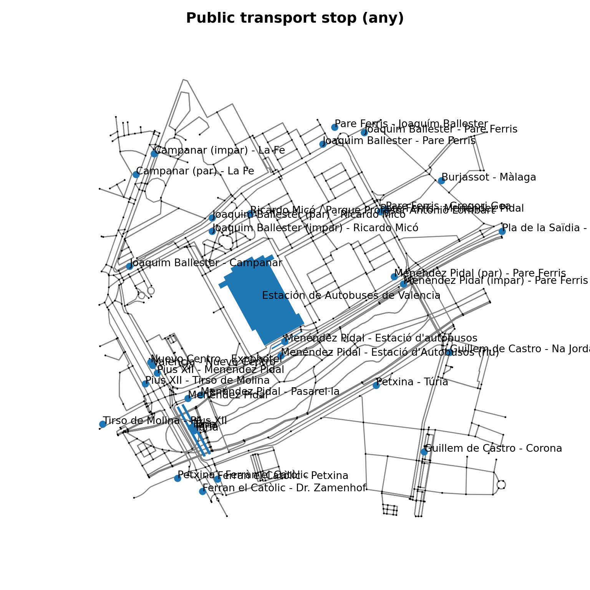
So, we might think
“fresh food / market” looks pretty good (noting it combines supermarkets with other smaller locations like delis and bakeries) — but it didn’t capture the Russian supermarket “Березка Supermercado” around the corner on Carrer de Menéndez Pidal. This doesn’t appear to be an issue with our synonyms – I think it is just not coded on OpenStreetMap. In the context of other offerings, I don’t think this will have much impact for this location — but for a city, you might want to consider the implications
“convenience” looks pretty sparse, although arguably some of this concept is wrapped up in “fresh food / market”; and the conceptual meaning in our framework could be questioned too — is it a bad thing that there isn’t a petrol station here? Perhaps this concept needs rethinking, however the broad rationale is that it captures other aspects of a ‘mixed use’ area with a range of services. One would think more places such as this would have been identified near us (eg in the shopping centre next door to us).
“public transport”, including the bus depot next door, looks comprehensively covered in this area!
So let’s re-prepare the destination analysis done above in a single code block and look how we can use this new information.
destinations = {
'source': './data/osm_destination_definitions.csv'
}
destinations['tags'] = pd.read_csv(destinations['source'], encoding="utf-8")
destinations['types'] = destinations['tags']['Destination'].unique()
destinations['data']={}
# initialise daily living access score using two methods we'll compare
origin['indicators']['daily_living_access_score_binary'] = 0
origin['indicators']['daily_living_access_score_continuous'] = 0
for d in destinations['types']:
# format look up table for tags
destinations['data'][d] = destinations['tags']\
.query(f"Destination=='{d}'")[['key','value']]\
.groupby('key')['value']\
.apply(list)\
.to_dict()
# retrieve destinations matching tags in buffered distance from origin
destinations['data'][d] = ox.geometries.geometries_from_address(
origin['address'],
destinations['data'][d],
dist=analysis['analysis_buffer']
)\
.to_crs(origin['crs'])['geometry']\
.reset_index()\
.query("element_type=='node'")[['osmid', 'geometry']]
# calculate the nearest node and distance to this for destinations
destinations['data'][d]['node'],\
destinations['data'][d]['node_distance'] = ox\
.nearest_nodes(
origin['G_proj'],
X=destinations['data'][d].geometry.x,
Y=destinations['data'][d].geometry.y,
return_dist=True
)
# join the destination and origin distance-to-nodes datasets
destinations['data'][d] = destinations['data'][d].merge(
origin['node_distances'],
how='left',
left_on='node',
right_index=True)
# calculate the full distance each destination to origin
destinations['data'][d]['full_distance'] = (
destinations['data'][d]['node_distance'] +
destinations['data'][d]['distance'] +
origin['node_distance']
).round(0).astype('Int64')
# record the id, node and distance to closest destination for origin
origin[d] = {}
(
origin[d]['osmid'],
origin[d]['node'],
origin[d]['distance']
) = destinations['data'][d]\
.sort_values('full_distance')\
.iloc[0][['osmid','node','full_distance']]\
.values
# evaluate binary access score and add to running access score sum
origin[d]['access_binary'] = binary_access_score(
origin[d]['distance'] , analysis['access_distance']
)
origin['indicators']['daily_living_access_score_binary'] += (
origin[d]['access_binary']
)
# evaluate continuous access score and add to running access score sum
origin[d]['access_continuous'] = continuous_access_score(
origin[d]['distance'] , analysis['access_distance']
)
origin['indicators']['daily_living_access_score_continuous'] += (
origin[d]['access_continuous']
)
# display results for this destination
print(f'\n\n{d}\n{origin[d]}')
Fresh Food / Market
{'osmid': 6625118553, 'node': 6625150686, 'distance': 423, 'access_binary': 1, 'access_continuous': 0.6835208937363156}
Convenience
{'osmid': 839488381, 'node': 217780772, 'distance': <NA>, 'access_binary': 0, 'access_continuous': 0}
Public transport stop (any)
{'osmid': 10044791821, 'node': 193553306, 'distance': 105, 'access_binary': 1, 'access_continuous': 0.9811090380629609}print(
f"\n\nDaily living score (binary): "
f"{origin['indicators']['daily_living_access_score_binary']}"
f"\n\nDaily living score (continuous): "
f"{origin['indicators']['daily_living_access_score_continuous']}"
)
Daily living score (binary): 2
Daily living score (continuous): 1.6646299317992765So we have calculated our first indicators now for our hotel, and the results are worth thinking about.
For a Fresh Food Market, using a binary score evaluated against 500 metres, this has been evaluated as having access, so scores 1/1. However, with the distance to closest Fresh Food Market estimated at 438 metres, using a continuous scoring method this was 0.65/1. Where the Russian supermarket 270 m away identified, the score would have been 0.91.
Few convenience stores were identified, and we flagged this as a conceptual concern already. Those identified could not be routed to, and the reasons for this should be investigated.
Access to public transport is near perfect at 105 metres; to be expected be located next to a bus station.
for d in destinations['types']:
origin[d]['route'] = ox.distance.shortest_path(
origin['G'],
origin['node'],
origin[d]['node'],
weight='length'
)
fig, ax = ox.plot_graph_route(
G = origin['G_proj'],
route = origin[d]['route'],
node_size=0,
bgcolor='white',
edge_color='gray',
node_color='black'
)
plt.close()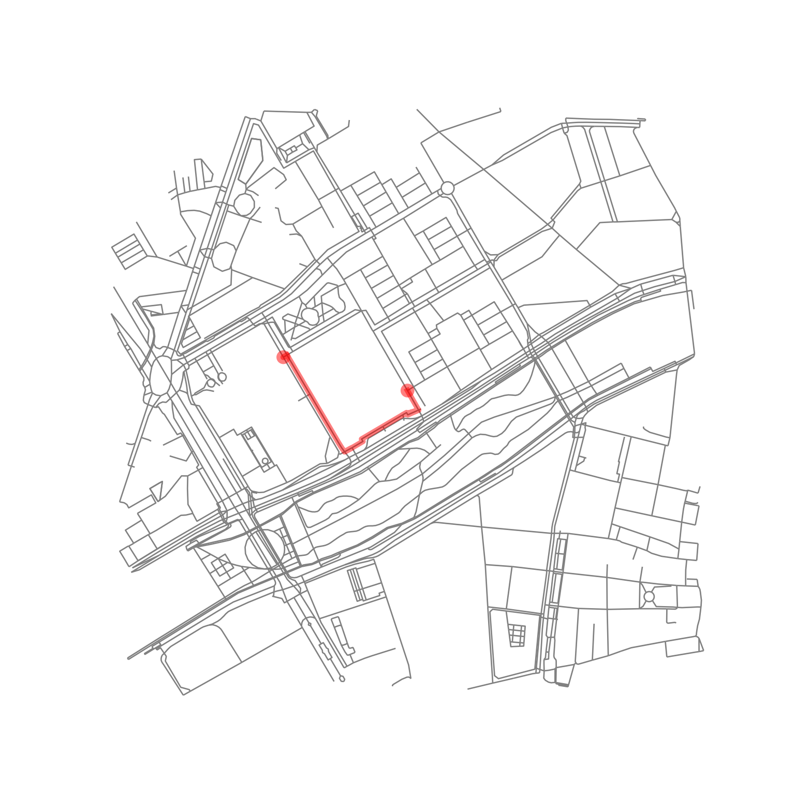
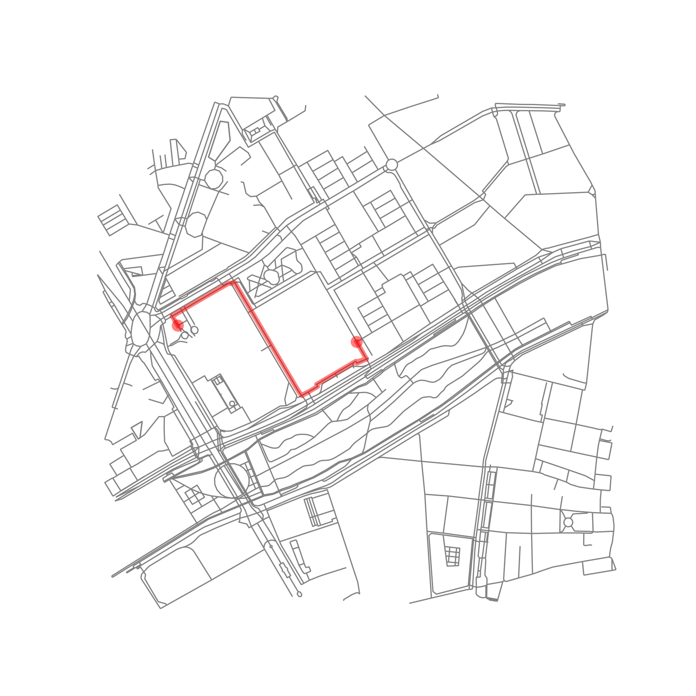
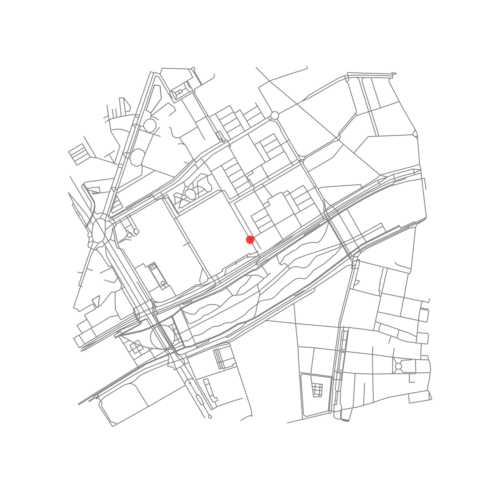
Walkability
Okay — we have our indicators (forgiving some improvisation — we don’t have a true estimate for population density due to system/time constraints). So, notwithstanding challenges (for just a single point!) we can attempt to calculate a walkability index.
So the standard walkability measure we calculate in much of our work is intended for more than just 1 point — its an index of relative walkabilty, and calculated as a sum of z-scores for population density, street connectivity (intersection density) and access to mixed services and amenities (land use mix).
A z-score is a standardised score calculated as the difference of some observed value from an empirically defined reference standard (the average), divided by the standard deviation (which is a measure of variation). Assuming a normal distribution (which is a limitation we’ll discuss) 95% of observations would lie within 1.96 sd of the sample mean. So that’s all to say, by dividing by 1 sd, we can get our 3 variables on an equivalent scale relative to the observed variation in the population.
Anyway – i could write paragraphs about the above, but for a single point its pointless — there’s no variation its just itself!
What you want in this case (and perhaps in other cases) is a more meaningful standard, perhaps one that is relevant to practice.
So let’s say our standards that should be met (assuming ‘more is better’… not always necessesarily so) could be the following, drawing on lower bounds from Cerin et al.
intersections: 106
population: 5677
and using the ‘Meatloaf’ method, let’s say ‘2 out of 3 destinations isn’t bad’
daily living score: 2
Let’s as an exercise come up with a scoring method for these
a basic one could be
int(observed >= standard)
which creates a set of binary indicators we could sum up; that’s pretty course for a single point (a score of 0,1,2 or 3; or in the range 0 to 1 if we divide by 3), but taking the average across a larger area, we’d probably get a nicer continuous score that could capture some meaningful variation.
We’ll code this together, then discuss Bury :)
Measuring walkability for a city
Retrieve population data from Global Human Settlements Layer
Retrieve an archived file of OpenStreetMap for a point in time and place
Derive a routable pedestrian network from OpenStreetMap using OSMnx
actually a limitation in the current approach, as currently this is done via Overpass API, ie ‘latest’; ideally would draw on same OSM file (or other features would be also drawn from OSMnx)
I can discuss this as one thing (amongst others we want to address in our workflow in future)
Derive cleaned intersections
Generate sample points at regular intervals along routable network
Summarise population distribution and density statistics for population and intersections for grid cells
Estimate 1000m walkable neighbourhood densities for sample points
Estimate access to each amenity type within threshold distances (ie. for this, 500m)
Calculate a ‘daily living access score’ as a measure of access to a mixed range of services and amenities (ie. land use mix proxy; i’ll provide links to literature re this)
Calculate average scores of population density, street connectivity (itnersection density) and daily living score for small area hexagon grid
Calculate walkability index for sample points using two methods
as a sum of standardised scores for population density, street connectivity and daily living score (ie. comparison against a relative standard)
- this is what we did in our 25 city study, for within and between city comparisons
as a sum of scores for meeting recommended threshold of these variables (ie. comparison against a fixed standard)
- this is what we have considered doing for the 1000 city study, but are deferring this decision